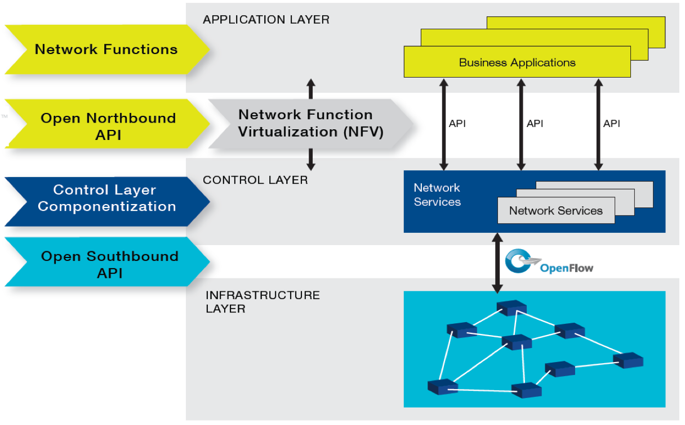

-
軟體定義網路(Software-Defined Networking) 被視為顛覆傳統網路工業的革命性技術。
- 軟體定義雲端資料中心為未來重要產業趨勢
-
雲端運算是近年來資通訊產業最重要的一波革命性的發展，為我國產業發展重點之一。
- 「國產雲端資料中心解決方案」於今年1月啟動。
-
軟體定義雲端資料中心為未來重要產業趨勢
- 專注在資料中心， scalability相較容易克服。
- 軟體定義網路對雲端資料中心帶來新的產業與技術
- 建構一個以軟體定義網路為基礎的雲端資料中心實驗平台
- 發展以軟體定義網路為基礎的雲端資料中心網路傳輸技術
- 發展以軟體定義網路為基礎的雲端資料中心網路虛擬化(NV)及網路功能虛擬化(NFV)技術
- 發展以軟體定義網路為基礎的雲端服務
SDN架構
計畫架構與分工

| 研究範疇 | 主要工作內容 | |
|---|---|---|
| 總計畫 | 雲端資料中心實驗平台 | 建置實際測試平台與網頁管理介面、整合各子計畫之研究成果 |
| 子計畫一 | 雲端資料中心網路技術 | 社群服務雲端資料存取技術 |
| 子計畫二 | 網路功能虛擬化技術 | 以軟體定義網路為基礎的雲端資料中心的架構下之網路功能虛擬化及服務鏈標準介面的設計、平台實作及虛擬網路技術、資源配置與服務品質確保。 |
| 子計畫三 | 社群服務雲端資料存取技術 | 以軟體定義網路為以軟體定義網路為社群服務大量存取雲端資料存取之解決方案。 |
計畫人力
| 計畫 | 主持人 | 服務機構/系所/職稱 | 共同主持人 | 服務機構/系所/職稱 |
|---|---|---|---|---|
| 總計畫 | 黃仁竑 | 中正大學資工系特聘教授兼工學院院長 | ||
| 子計畫一 | 黃仁竑 | 中正大學資工系特聘教授兼工學院院長 | 李詩偉 | 中正大學通訊系副教授 |
| 楊竹星 | 成功大學電機系教授 | |||
| 陳俊良 | 台灣科技大學電機系特聘教授 | |||
| 子計畫二 | 林柏青 | 中正大學資工系助理教授 | 林盈達 | 交通大學資工系特聘教授 |
| 黃能富 | 清華大學資工系特聘教授 | |||
| 子計畫三 | 陳彥文 | 中央大學通訊系教授 | 江為國 | 中正大學資工系副教授 |
服務導向軟體定義雲端資料中心計畫亮點
- SDN cloud networking technology
- Hybrid SDN-Ethernet Cloud Support broadcast free ARP, multi-tenant, VM live migration, fast fail over, load balancing routing, multiple path TCP
- All-SDN cloud Support auto addressing, auto routing, fast fail over, load balancing
- File two patents
- Virtual network technology
- Enable network virtualization with QoS control via FlowVisor
- Enable network virtualization with QoS control via virtual tenant network
- Network Function Virtualization (NFV) technology
- Proposed one proposal at ONF Member Workdays (Feb. 2015)
- Proposed an Extended SDN Architecture for NFV
- Implemented an event-based SDN architecture for network security analysis
- Published 2 journal papers, 6 conference papers
- Granted two projects, one from III, one from ITRI